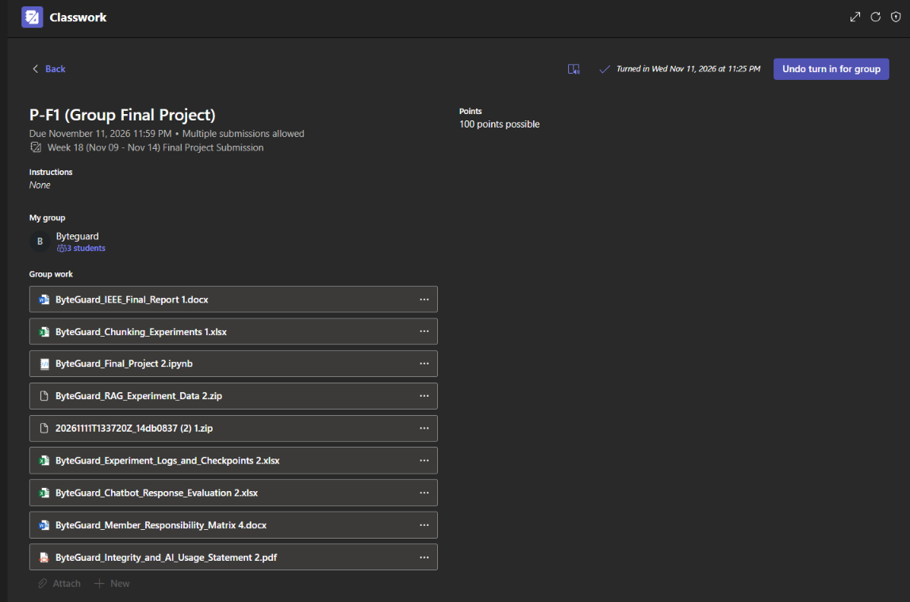

This activity presents our group's final RAG-based chatbot project. It brings together the different tasks and experiments completed throughout the course, including dataset preparation, chunking experiments, chatbot development, optimization, and response evaluation.
Submitted Outputs
Microsoft Teams Submission Screenshot

Learning Reflection
Working on this final project gave me a clearer view of how the lessons from the course are connected when building a RAG-based chatbot. I was able to understand how each part contributes to the project, from preparing the dataset and testing different chunking settings to improving the chatbot and checking the quality of its responses.
I also learned that being part of a group project involves different responsibilities. Aside from the actual development, checking the files, reviewing the notebook, organizing the outputs, and preparing the documentation are also important tasks. These contributions help ensure that the project is complete and properly presented.
Through this experience, I improved my skills in documentation, technical writing, file checking, and teamwork. It also helped me understand the time and effort needed to bring the different parts of a technical project together and present the final results properly.